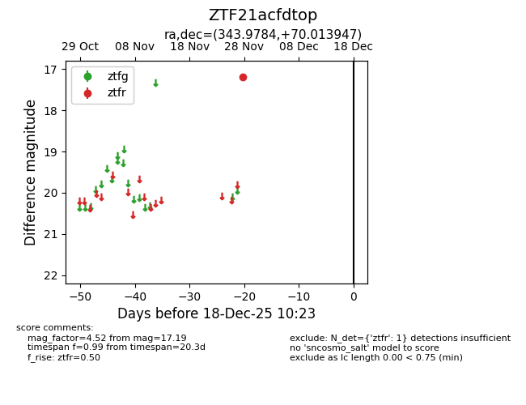
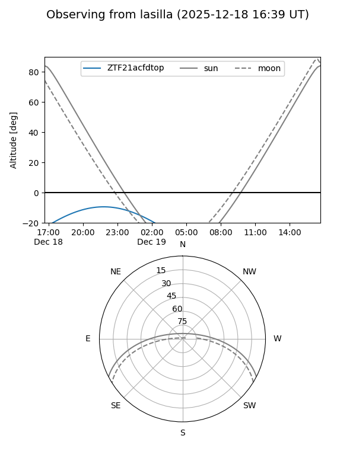
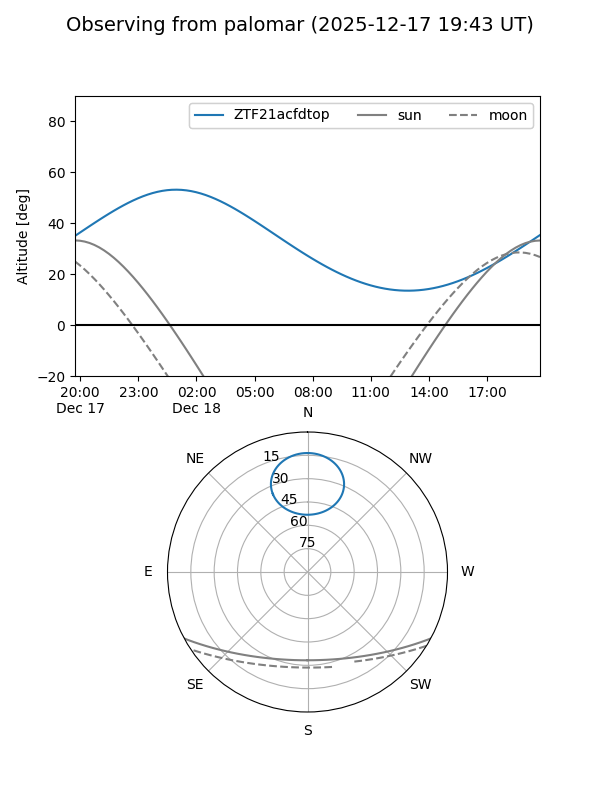

ZTF21acfdtop
Target ZTF21acfdtop at 2025-12-18 11:17
Aliases and brokers:
FINK: fink-portal.org/ZTF21acfdtop
Lasair: lasair-ztf.lsst.ac.uk/objects/ZTF21acfdtop
ALeRCE: alerce.online/object/ZTF21acfdtop
alt names
ZTF21acfdtop (ztf,fink_ztf)
Coordinates:
equatorial (ra, dec) = 343.9784,+70.01395
equatorial (HMS+DMS) = 22:55:54.80,+70:00:50.21
galactic (l, b) = (113.3012,+9.33266)
Photometry
last ztfr=17.19
1 ztfr detections
Lightcurve

Visibility


Additional plots